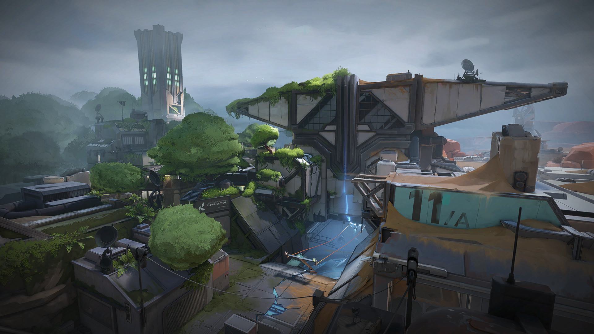

MAP - FRACTURE
A top secret research facility split apart by a failed radianite experiment. With defender options
as divided as the map, the choice is yours: meet the attackers on their own turf or batten down the hatches to weather the assault.
as divided as the map, the choice is yours: meet the attackers on their own turf or batten down the hatches to weather the assault.

Fracture is a top-secret experiment site split apart by a radianite-fueled disaster. In its simplest form,
the map is marked by its H-shape layout with a visual split down the middle that reveals contrasting sides.
Long ziplines also connect routes underneath. Like previous maps, keep an eye out for heavy tie-ins to VALORANT lore, including first-time interactive narrative objects.
Fracture's unique design splits up the map into four neutral quadrants, four central areas between the
quadrants that contain the sites and Attacker spawns, and a central zone where Defenders spawn.
On Round Start, Defenders can access the sites, which are on opposite sides of the map.
Attackers all spawn in one area, but can reach the other side by using the cross-map ziplines that take them
underneath Defender Spawn. During the Buy Phase, Defenders are unable to hear Attackers using the ziplines.
Each quadrant contains one orb, meaning Fracture has a total of four orbs as opposed to the usual
total of two orbs that are present on most other maps.
A Hall contains an automatic door that works similarly to the exit room doors for Bind's teleporters,
as it will instantly open once a player gets close enough, making a loud audio cue as it does,
and will also open for any abilities thrown towards it. This door on Fracture however will also open for entities on both sides of the door.
Map coordinates at 35°48'BI" N 106°08'YQ" W, in Santa Fe, New Mexico, USA.
the map is marked by its H-shape layout with a visual split down the middle that reveals contrasting sides.
Long ziplines also connect routes underneath. Like previous maps, keep an eye out for heavy tie-ins to VALORANT lore, including first-time interactive narrative objects.
Fracture's unique design splits up the map into four neutral quadrants, four central areas between the
quadrants that contain the sites and Attacker spawns, and a central zone where Defenders spawn.
On Round Start, Defenders can access the sites, which are on opposite sides of the map.
Attackers all spawn in one area, but can reach the other side by using the cross-map ziplines that take them
underneath Defender Spawn. During the Buy Phase, Defenders are unable to hear Attackers using the ziplines.
Each quadrant contains one orb, meaning Fracture has a total of four orbs as opposed to the usual
total of two orbs that are present on most other maps.
A Hall contains an automatic door that works similarly to the exit room doors for Bind's teleporters,
as it will instantly open once a player gets close enough, making a loud audio cue as it does,
and will also open for any abilities thrown towards it. This door on Fracture however will also open for entities on both sides of the door.
Map coordinates at 35°48'BI" N 106°08'YQ" W, in Santa Fe, New Mexico, USA.

FRACTURE IN GAME MINI-MAP
callouts
- attacker side bridge
- attacker side spawn
- A Site
- A Link
- A Rope
- B Link
- Hall
- Garden
- Fountain
- Exit
- Elbow
- A Main
- gate
- dish
- drop
- door
- defender side spawn
- hall
- bensh
- arcade
- tower
- tuunel
- generator
- canteen
- tree
- B Site
- B Main